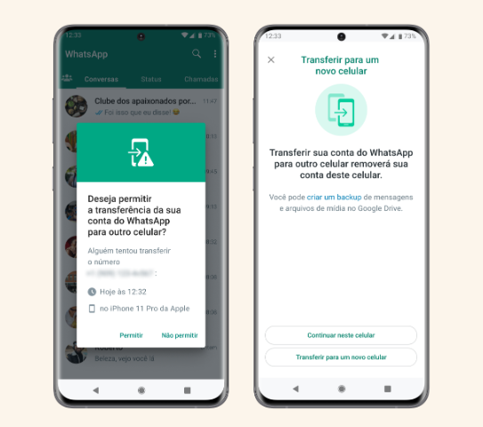

WhatsApp anuncia recurso de proteção contra roubo de contas; veja como funciona
Ferramenta será implementada de forma automática
O WhatsApp anunciou três recursos de proteção. O principal deles vai oferecer uma camada extra de segurança na tentativa de evitar roubos de contas. Quando for solicitada uma transferência de conversas para um aparelho novo, o app vai confirmar a identidade do usuário no aparelho antigo. O recurso será implementado de forma gradual nos próximos meses.
O objetivo do recurso é alertar o usuário sobre uma tentativa não autorizada de transferência da conta para outro dispositivo no formato remoto. O dono da conta receberá a mensagem no celular antigo e poderá visualizar:
- o número novo;
- o horário da tentativa;
- e o modelo do smartphone.
O novo recurso funcionará em situações em que o WhatsApp entender que uma tentativa de registro é suspeita. Porém, a empresa não divulga quais fatores configuram uma “situação suspeita” a ponto de precisar comprovar a identidade do usuário. Importante mencionar que esse recurso de “Proteção de Conta” não é uma funcionalidade que pode ser ativada pelo usuário. É uma proteção extra ativada pela equipe do WhatsApp quando detectar uma tentativa de registro suspeita. Por isso, para ter o recurso no aparelho, a recomendação é manter o aplicativo atualizado conforme sua loja de compras de app (iOS ou Android) para ter acesso à novas funcionalidades e possíveis correções de bugs. Além disso, em casos de furto ou roubo, quando o usuário não tiver acesso ao dispositivo antigo, a recomendação prinicpal do app é avisar a operadora para que o chip do aparelho seja bloqueado e o criminoso não tenha acesso à conta.
Depois disso, é possível solicitar no novo aparelho a chamada “senha de uso único”, que vai permitir que o usuário recupere sua conta. Essa opção vai aparecer quando o usuário for configurar o novo celular. Segundo o WhatsApp, a tecnologia do app checa, entre outras coisas, a rede de wi-fi do usuário. Se for uma rede já conhecida, por exemplo, é possível entender que é realmente o usuário que está tentando recuperar a conta no novo aparelho.

Outros recursos de segurança
Além dessa novidade, o app de mensagens também compartilhou outros dois recursos: uma nova “Verificação de dispositivo” e “Códigos de segurança automáticos”. No primeiro caso, o WhatsApp quer aumentar a proteção contra malwares, softwares que invadem o celular do usuário e assumem o controle do aparelho e podem mandar mensagens no app no lugar dos usuários. O WhatsApp fará verificações nos dispositivos para garantir que as contas não sejam afetadas. O usuário não precisará fazer nada em seu aparelho. Quem fará essa verificação será o próprio app como ação-padrão nas contas, a partir da atualização do app, que já está ativa para celulares Android e para iOS. Essa funcionalidade deve ser liberada em breve. Segundo o WhatsApp, esse recurso vai combater especialmente malwares que tentam roubar a chamada “chave de autenticação”, que é única para cada conta e permite a conexão à plataforma.
Por fim, esse segundo recurso vai permitir que os usuários possam checar se a conta com a qual está interagindo no WhatsApp é protegida com criptografia de ponta a ponta. É possível verificar isso manualmente. Basta acessar a aba “Criptografia” nas informações de um contato. Esse recurso também chegará aos aparelhos dos usuários nos próximos meses.